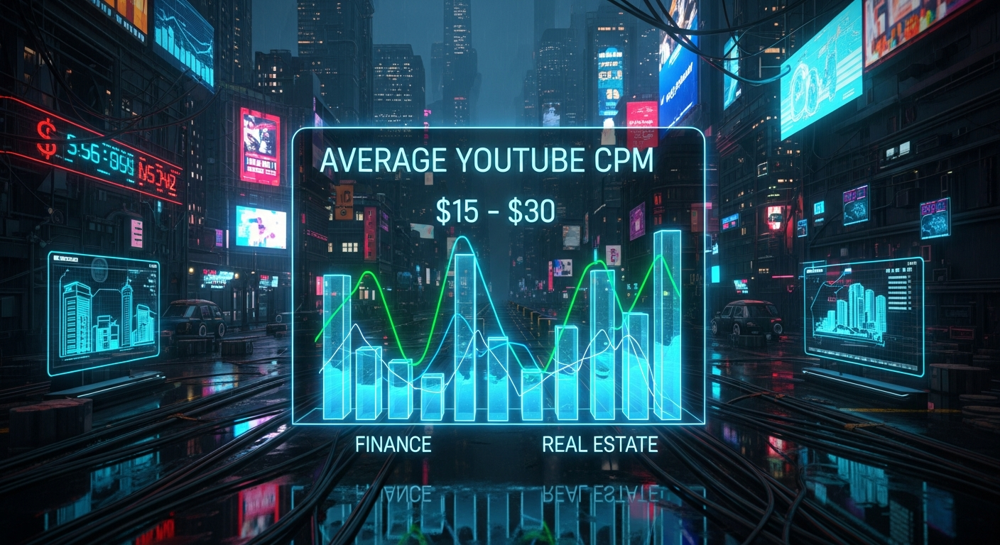

In the vast digital landscape of YouTube, not all views are created equal. While a million views on a viral comedy sketch might generate a respectable paycheck, a million views on a detailed analysis of mortgage-backed securities or a guide to commercial real estate investing can generate a life-changing one. This enormous disparity is rooted in a single, powerful metric: CPM, or Cost Per Mille. The finance and real estate niches are the titans of YouTube monetization, commanding advertising rates that creators in other categories can only dream of. This isn't by accident; it's the result of a perfect storm of a high-value audience, motivated advertisers with deep pockets, and content that directly intersects with multi-thousand-dollar decisions. This article will dissect the intricate world of finance and real estate CPMs, moving beyond simple averages to explore the specific factors that dictate your earning potential. We will explore why these niches are so lucrative, what specific sub-topics generate the highest revenue, and how you, as a creator, can strategically position your content to capitalize on this digital gold rush. Understanding the mechanics of CPM and its more creator-focused sibling, RPM, is the first step toward transforming your channel from a passion project into a formidable business.
Before diving into specific numbers, it is absolutely critical to understand the fundamental metrics that govern YouTube ad revenue. The most commonly cited metric is CPM (Cost Per Mille), which translates to Cost Per 1,000 impressions. This is an advertiser-centric metric. It represents the amount of money an advertiser is willing to pay to show their ads 1,000 times on YouTube videos. When a financial institution like a brokerage firm or a bank wants to target viewers interested in investing, they bid against other advertisers for that ad space. The fierce competition for this specific audience drives the bid prices, and therefore the CPM, sky-high. In essence, the CPM reflects the perceived value of the audience to the advertiser.
However, for a YouTube creator, a more practical and insightful metric is RPM (Revenue Per Mille), or Revenue Per 1,000 video views. This is the number you see in your YouTube Studio analytics and it represents your actual earnings. RPM is a comprehensive metric that includes revenue from all sources on a video (not just ads, but also YouTube Premium, Super Chats, etc.) after YouTube has taken its revenue share (typically a 45% cut of ad revenue). Because RPM is calculated based on total views (not just monetized ad impressions) and is post-revenue-share, it will always be lower than the CPM. A high CPM is great, but a high RPM is what actually pays your bills. For example, a video might have a CPM of $40, but after accounting for YouTube's cut and the fact that not every single view is served an ad, the creator's RPM might be closer to $18.
The core reason finance and real estate channels command such a premium lies in the concept of Customer Lifetime Value (CLV) for the advertisers. Consider an advertiser in the gaming niche, perhaps selling a mobile game. The value of a new customer might be a few dollars in in-app purchases. Now, consider an advertiser in the finance niche, like a mortgage lender. A single successful lead generated from a YouTube ad could result in a $400,000 mortgage, earning the lender thousands of dollars in interest and fees over the life of the loan. Similarly, an ad for a stock brokerage could lead to a new client who deposits $50,000 and trades actively for years. Given that a single conversion is worth so much, these companies can justify spending hundreds or even thousands of dollars on advertising to acquire that one customer. They are willing to pay a $50 CPM because the potential return on investment is astronomical. This creates a highly competitive auction for ad placements on videos about investing, credit cards, loans, and property, directly inflating the revenue for creators in these spaces.
Stating an "average" CPM for finance and real estate is a significant oversimplification, as the reality is a wide and varied spectrum. The specific sub-topic of your video is one of the most powerful levers determining your revenue. The closer your content is to a high-ticket financial transaction, the higher the CPM will be. Think of it as a pyramid of value. At the base, you have broad topics with a massive potential audience but lower commercial intent, while at the peak, you have hyper-specific topics that attract a smaller but extremely valuable audience ready to make a financial move.
Let's break down this spectrum with concrete examples:
A creator's content strategy should ideally include a mix of these tiers. Lower-tier topics can be excellent for audience growth and building community, while mid and top-tier topics serve as the primary revenue drivers. Understanding this spectrum allows you to be intentional about your content calendar, balancing videos designed for reach with videos designed for maximum revenue.
Turn your scripts into professional videos automatically. Use code PAVEL20 for 20% OFF!
START CREATING WITH PICTORYWhile content is king, geography is the kingmaker when it comes to YouTube CPMs. You can create the most brilliant video on commercial real estate financing, but if your audience is primarily located in a country with low advertiser spend, your revenue will be a fraction of what it could be. This factor cannot be overstated: the geographic location of your viewers is arguably the single most important determinant of your channel's CPM. Advertisers allocate their budgets based on where they can find customers with high disposable income and access to their products and services.
The world of YouTube monetization is unofficially divided into tiers based on economic power and ad market maturity:
What does this mean for you as a creator? It means being strategic is paramount. Creating content in English is the most straightforward way to target a global, high-income audience, as it's the primary language of most Tier 1 countries. You should also tailor your topics to these audiences. Discussing a 401(k) or a Roth IRA is directly relevant to a US audience, while talking about an ISA (Individual Savings Account) targets viewers in the UK. Using location-specific keywords in your titles and descriptions, such as "Best Real Estate Investments in Texas 2024," can further attract the desired demographic. Regularly check your YouTube Analytics to see where your views are coming from. If you notice a growing audience in a high-CPM country, double down on content that serves their specific needs and questions.
Achieving a high CPM and, more importantly, a high RPM is not a passive activity. Successful creators in the finance and real estate space are proactive strategists who leverage a suite of tools to engineer their success. Simply uploading a video and hoping for the best is a recipe for mediocrity. To truly maximize your revenue, you must think like an advertiser and build your content around demonstrable commercial value. This means a heavy emphasis on research, analytics, and strategic content formatting.
Here are the essential tools and strategies to add to your arsenal:
In summary, staying ahead of these trends is the key to business longevity and security. By following this guide, you maximize your growth and ensure a stable digital future.
Don't wait for the headlines. Our Private Telegram Channel delivers real-time AI security updates and digital wealth strategies before they go viral. Stay protected. Stay ahead.
⚡ JOIN THE 1% NOW